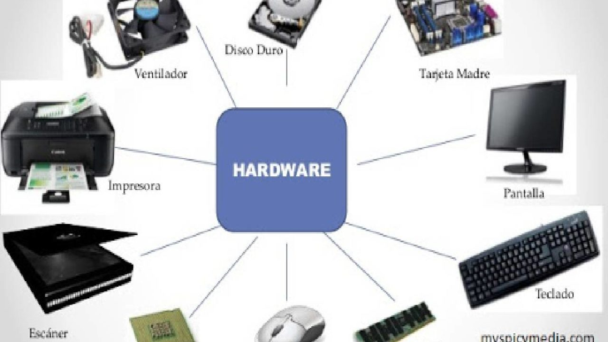

Information and Communication Technologies is a broader term for Information Technology, which refers to all communication technologies, including the internet, wireless networks, cell phones, computers, software, middleware, video-conferencing, social networking, and other media applications and services enabling users to access, retrieve, store, transmit, and manipulate information in a digital form.
Although ICT is often considered an extended synonym for information technology (IT), its scope is, in some ways, more broad. ICT is often used to describe the convergence of several technologies, and the use of common transmission lines carrying very diverse data and communication types and formats.
Components of an ICT system ICT encompasses both the internet-enabled sphere as well as the mobile one powered by wireless networks. It also includes antiquated technologies, such as landline telephones, radio and television broadcast -- all of which are still widely used today alongside cutting-edge ICT pieces such as artificial intelligence and robotics.
ICT is sometimes used synonymously with IT (for information technology); however, ICT is generally used to represent a broader, more comprehensive list of all components related to computer and digital technologies than IT.
The list of ICT components is exhaustive, and it continues to grow. Some components, such as computers and telephones, have existed for decades. Others, such as smartphones, digital TVs and robots, are more recent entries.
ICT commonly means more than its list of components, though. It also encompasses the application of all those various components. It's here that the real potential, power and danger of ICT can be found.

-The term is generally used to describe data centers available to many users over the Internet. Large clouds, predominant today, often have functions distributed over multiple locations from central servers.If the connection to the user is relatively close, it may be designated an edge server.Clouds may be limited to a single organization (enterprise clouds), be available to many organizations (public cloud) or a combination of both (hybrid cloud).For example the largest public cloud is Amazon AWS.

- Software is a set of instructions, data or programs used to operate computers and execute specific tasks. Opposite of hardware, which describes the physical aspects of a computer, software is a generic term used to refer to applications, scripts and programs that run on a device. Software can be thought of as the variable part of a computer and hardware the invariable part. Software is often divided into application software, or user downloaded programs that fulfil a want or need, and system software, which includes operating systems and any program that supports application software.

-in the context of technology, refers to the physical elements that make up a computer or electronic system and everything else involved that is physically tangible. This includes the monitor, hard drive, memory and the CPU. Hardware works hand-in-hand with firmware and software to make a computer function. Hardware is only one part of a computer system; there is also firmware, which is embedded into the hardware and directly controls it.

-Digital Transactiona can be broadly defined as online or automated transactions that take place between people and organizations—without the use of paper. Digital transactions save time and money, resulting in a better bottom line. Customer experiences are also enhanced (think of the convenience of eSigning versus having to print a contract, sign it, and then return it by mail or fax). And digital transactions improve tracking capabilities—which helps reduce errors.

-Digital data is data that represents other forms of data using specific machine language systems that can be interpreted by various technologies. The most fundamental of these systems is a binary system, which simply stores complex audio, video or text information in a series of binary characters, traditionally ones and zeros, or «on» and «off» values.

The internet access is the process of connecting to the internet using personal computers, laptops or mobile devices by users or enterprises. Internet access is subject to data signalling rates and users could be connected at different internet speeds. Internet access enables individuals or organizations to avail internet services/web-based services. The internet began to gain popularity with dial-up internet access. In a relatively short time, internet access technologies changed, providing faster and more reliable options. Currently, broadband technologies such as cable internet and ADSL are the most widely used methods for internet access. The speed, cost, reliability and availability of internet access depends on the region, internet service provider and type of connection.
However, ICT commonly means more than its list of components, though. It also encompasses the application of all those various components.

-Greater efficiency throughout the school.
-Communication channels are increased through email, discussion groups and chat rooms.
-Regular use of ICT across different curriculum subjects can have a beneficial motivational influence on students’ learning.
-Improved access to education, e.g. distance learning and on-line tutorials. New ways of learning, for example interactive multi-media and virtual reality. New job opportunities, for example flexible and mobile working, virtual offices and jobs in the communications industry.
-ICT can be used to help people overcome disabilities.For example screen magnification or screen reading software enables partially sighted or blind people to work with ordinary text rather than Braille.
-Job loss: One of the largest negative effects of ICT can be the loss of a person’s job. This has both economic consequences, loss of income, and social consequences, loss of status and self esteem. Job losses may occur for several reasons, including: Manual operations being replaced by automation. For example robots replacing people on an assembly line.Job export.For example Data processing work being sent to other countries where operating costs are lower. Multiple workers being replaced by a smaller number who are able to do the same amount of work. For example A worker on a supermarket checkout can serve more customers per hour if a bar-code scanner linked to a computerized till is used todetect goods instead of the worker having to enter the item and price manually.
-Reduced personal interaction: Being able to work from home is usually regarded as being a positive effect of using ICT, but there can be negative aspects as well. Most people need some form of social interaction in their daily lives and if they do not get the chance to meet and talk with other people they may feel isolated and unhappy.
-Reduced physical activity: A third negative effect of ICT is that users may adopt a more sedentary lifestyle. This can lead to health problems such as obesity, heart disease, and diabetes. Many countries have workplace regulations to prevent problems such as repetitive strain injury or eyestrain, but lack of physical exercise is rarely addressed as a specific health hazard.